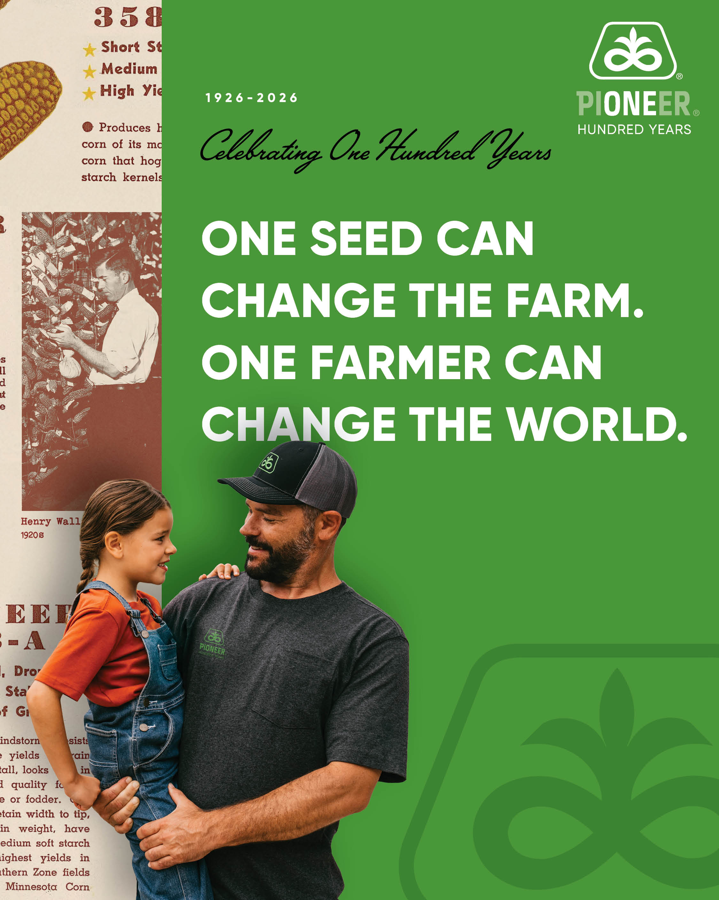
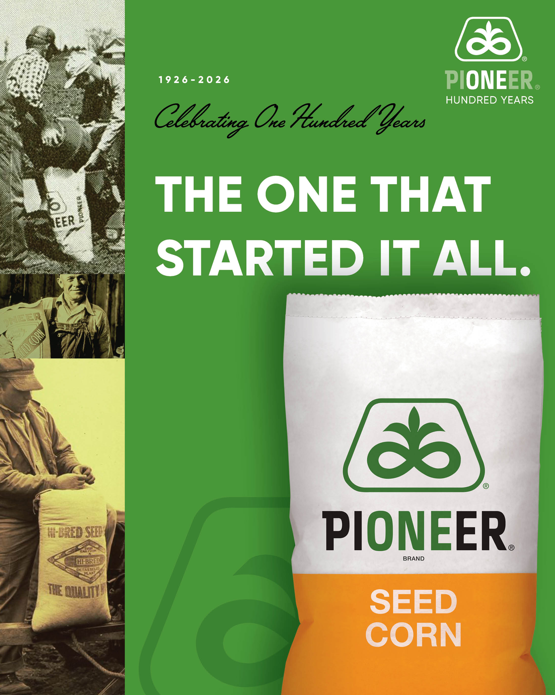

From Henry A. Wallace's first hybrid seed corn to world-record yields — 100 years of Pioneer.
One seed can change the farm. One farmer can change the world. What started as a small Iowa company selling the first commercially available hybrid seed corn has grown into the No. 1 corn and soybean brand in the United States. This is the story of how Pioneer got here.
Grows wild in Mesoamerica. The closest known wild relative of corn — despite looking nothing alike, teosinte and corn are nearly identical genetically. Bushy plants with many tillers, small triangle-shaped seeds enclosed in hard shells, crude ears on every branch.
Over thousands of years, indigenous farmers selectively bred teosinte into the corn we know today — one of the most remarkable feats of plant domestication in human history.
Henry A. Wallace develops a hybrid called Copper Cross — a cross between Leaming and Bloody Butcher open-pollinated varieties — that wins the Iowa State Corn Yield Test. It proves that hybrid vigor can translate to the field. The commercial seed corn industry is about to be born.
Henry A. Wallace, his brother James, and a small group of partners incorporate the Hi-Bred Corn Company — the first business in the world created specifically for developing and marketing hybrid seed corn. Wallace is 37 years old.
At this time, hybrid corn adoption is near zero. Farmers save their own open-pollinated seed. U.S. average corn yield: about 26 bu/acre.
Henry A. Wallace leaves Iowa for Washington, D.C. to serve as Franklin D. Roosevelt's Secretary of Agriculture. He turns day-to-day management of the company over to associates, but the foundation he built — research-driven hybrid development — continues to drive the company forward.
The company becomes Pioneer Hi-Bred, reinforcing its identity as an innovator. Hybrid corn adoption in Iowa stands at just 6% of planted acres — but the tide is turning fast.
By 1938, Iowa hybrid adoption hits 50%. By 1942, it reaches nearly 100%. The hybrid revolution is complete in just 16 years.
Henry A. Wallace becomes the 33rd Vice President of the United States, serving under FDR. A seed corn breeder from Iowa now holds the second-highest office in the nation. The company he founded continues to grow under professional management.
During World War II, Pioneer develops high-yielding hybrids that help secure the nation's food supply during global shortages. By 1949, Pioneer reaches one million units in annual sales — a major commercial milestone.
A Pioneer rep named Morse Johnson comes to Haxtun looking for someone to sell seed in the area. A local tells him to "go talk to McConnell, north of town." Morse finds Harold on his farm, busy getting steers ready for the county fair. Harold accepts the position — and later calls it "the best decision of my life."
The McConnell family's relationship with Pioneer begins. It will span three generations and more than six decades.
Pioneer introduces its iconic trapezoid logo — shaped like a flower and the symbol for infinity, representing constant vigor and unending growth through continuous research. That same year, seed bags transition from cloth to the now-familiar gold and white paper design.
The trapezoid becomes one of the most recognized symbols in agriculture, unchanged for over 60 years.
"International" is added to the name as Pioneer establishes joint ventures in Australia, Argentina, and South Africa. The company that started in a single Iowa county now serves farmers across the globe. By the late 1980s, Pioneer operates in 32 countries.
Pioneer Hi-Bred International conducts its first public stock offering. The company also expands aggressively beyond corn into soybeans, wheat, sunflower, canola, and alfalfa throughout the 1970s.
DuPont completes its acquisition of Pioneer Hi-Bred International in a $7.7 billion transaction. Pioneer becomes a wholly owned subsidiary with access to DuPont's deep research resources while maintaining its identity, brand, and farmer-first culture.
Richard L. McConnell — Harold's son, raised on the family farm in Haxtun — is appointed President of Pioneer Hi-Bred International and Vice President of DuPont. The farm boy from northeast Colorado now leads the world's largest seed company. Twenty-six of his 30 years with Pioneer were spent in R&D.
Pioneer launches Herculex, its first biotech trait platform for corn, providing above- and below-ground insect protection. A collaboration with Dow AgroSciences, it marks Pioneer's entry into the trait era — seeds that protect themselves.
Following the Dow-DuPont merger, Corteva Agriscience spins off as an independent, publicly traded company. Pioneer remains the flagship global seed brand. For the first time since the DuPont acquisition, Pioneer's parent company is a pure-play agriculture company.
David Hula of Charles City, Virginia sets a new world corn yield record at 623.89 bu/acre using Pioneer genetics — more than 24 times the yield when the company was founded. The P14830 family delivers strong roots, stalk strength, drought tolerance, and fast grain dry-down.
U.S. average corn yield — bu/acre. Record is David Hula's Pioneer plot in Virginia.
The Vorceed Enlist platform represents the most advanced corn trait stack Pioneer has ever commercialized. P13777Q delivers single-bag integrated refuge with multiple modes of action for above- and below-ground insects, plus tolerance to four herbicide active ingredients: 2,4-D choline, FOPs, glufosinate, and glyphosate.
Industry-leading yield performance. Excellent tar spot resistance. Average U.S. corn yield in 2024: 179.3 bu/acre — a new national record. Pioneer also sets a world soybean record at 218.29 bu/acre.
Pioneer celebrates its centennial at the Corteva Global Seed Business Center in Johnston, Iowa — the same community where Henry Wallace incorporated the Hi-Bred Corn Company 100 years earlier. David Wallace Douglas, Wallace's grandson, donates $100,000 to fund more than 100,000 meals for the Food Bank of Iowa.
Pioneer is the No. 1 corn and soybean brand in the U.S. by market share. U.S. corn yields have increased nearly 600% since the company's founding.
Yield & Yield Stability Trait: Proprietary genetic technology developed by Corteva to improve yield and yield stability under optimal growing, various soil types, and challenging seasons. Confers tolerance to important glufosinate alternatives.
Multi-Disease Resistance Trait: Gene-editing-enabled product with resistance to three key corn diseases for initial introduction. Broad-spectrum "in the seed" control helps growers manage year-to-year disease risk with design simplicity that allows rapid deployment across all bands and market segments. Field protection under even extremely high disease pressure.

The McConnell family has represented Pioneer in Phillips, Sedgwick, Logan, and Yuma counties since 1960. From Harold's handshake agreement on a Haxtun farm to the third generation today — 65 years of partnership with the growers who feed the world.